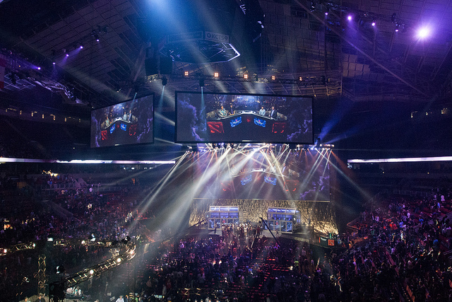

© Jakob Wells / flickr
Ungdommen udøver en ny form af sport, eSport
eSports // 26. Sep. 2017
eSport, eller Elektronisk Sport er en genre af sport som vokser eksponentielt i disse tider. eSport handler om professionelle udøvere i videospil. De mest udbredte og mest velkendte spil genre inden for eSport er Real-Time Strategy (RTS), Fighting Games (Fighting), First Person Shooter (FPS) og Multiplayer Online Battle Arena (MOBA). eSport har siden 2015 et publikum over 200 millioner.
Mental træning
Den generelle forståelse om eSport (hvis man ikke kender til det) er at folk bare er dovne og spiller timevis af computerspil og kan vinde præmier, men det ikke så nemt.
En udøver vil bruge 8 timer eller mere om dagen på at spille, det er for at forbedre sig til strategi, lære modstanderen at kende og sin egen fysik. Man skal som en eSport udøver have utrolig hurtige reflekser (reaction time), da et split sekund kan betyde hele spillet er vundet eller tabt. Man vil kunne sige at i forhold til traditionelle sport, så er eSport mere mental træning end fysisk træning.
Åbner en stor rækkevidde af arbejde
Nu hvor eSport er blevet et mere anerkendt marked, det betyder også at folk investere i det, og det er arbejdsmarkedet glad for. Hvis vi tager spillet 'League of Legends', så kan vi se at spillet har anbragt masser af arbejde. 'League of Legends' har en eSports side hvor de 'streamer' deres kampe på nettet hvor fans kan se med, for at se om deres hold vinder. Men det kræver utrolig mange folk at få styr på. Der er managers, produktion og endda en dommer.